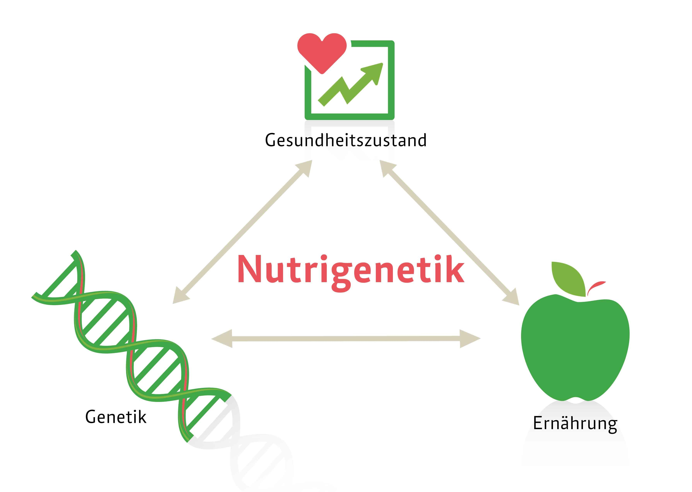

Gen-Diät oder DNA-Diät*
Unter dem Namen Gen-Diät (DNA-Diät) bzw. genetische Stoffwechselanalyse verbirgt sich eine Diätmethode, die auf einer DNA-Analyse basiert. Eine häufig gestellte Frage in der Bevölkerung ist: „Warum nehme ich nicht ab?". Viele Menschen, die gesund und auf natürliche Weise abnehmen möchten, wünschen sich einen langfristigen Abnehmerfolg ohne Jo-Jo-Effekt. Allerdings ist dieser Jo-Jo-Effekt v. a. bei den auf dem Markt existierenden Crash-Diäten vorprogrammiert. Um dauerhaft abzunehmen, ist es wichtig, sich an eine langfristige Ernährungsumstellung zu halten.
Die Gen-Diät wird der Wissenschaftsdisziplin Nutrigenetik zugeordnet, welche Ernährung und Genetik zusammenbringt. Ein individueller Ernährungsplan, welcher auch persönliche Faktoren des Abnehmwilligen berücksichtigt, ist ein guter Einstieg in die Ernährungsumstellung. Eine langfristige Ernährungsumstellung steht z. B. bei der innovativen Gen-Diät MetaCheck im Fokus.*
Im Laufe der Evolution musste sich der Mensch immer wieder an neue Lebensbedingungen anpassen. Dieser Prozess verlief jedoch nicht bei allen Menschen gleich, daher entwickelten sich verschiedene genetische Metabolismus- bzw. Stoffwechsel-Typen. Diese hat das Center of Genetic Analysis and Prognosis (kurz CoGAP) als sogenannte Meta-Typen definiert. Die Philosophie von CoGAP® ist, dass künftig jeder Mensch individuell und auf natürliche Weise abnehmen kann. CoGAP® hat sich deshalb zum Ziel gesetzt, die individuelle Ernährungsberatung ständig weiterzuentwickeln. Ihren persönlichen, von CoGAP® definierten Meta-Typen ermittelt es anhand einer Analyse Ihrer Gene, dem von CoGAP® Wissenschaftlern entwickelten innovativen CoGAP MetaCheck®. Das Center of Genetic Analysis and Prognosis ist davon überzeugt, Ihre Ernährung und sportlichen Aktivitäten auf Ihre genetische Veranlagung abstimmen zu können.*
Insgesamt gibt es vier Meta-Typen:
• Alpha (α)
• Beta (β)
• Gamma (γ)
• Delta (δ)
Meta-Typ Alpha (α)
Der Meta-Typ Alpha zeichnet sich durch eine bessere Verarbeitung von proteinreicher Nahrung aus. Im Rahmen der Gen-Diät zum Abnehmen sollte beim Meta-Typ Alpha der Anteil an kohlenhydratreichen und fetthaltigen Nahrungsmitteln reduziert werden.
Meta-Typ Beta (β)
Der Meta-Typ Beta verstoffwechselt neben Proteinen auch Fette gut. Beim Abnehmen sollte daher auf eine kohlenhydratarme Kost geachtet werden.
Meta-Typ Gamma (γ)
Der Meta-Typ Gamma kann, anders als Alpha und Beta, Kohlenhydrate sehr gut verstoffwechseln. Daher sollte dieser Typ während einer Gen-Diät den Anteil an proteinreicher und fettreicher Nahrungsmittel reduzieren.
Meta-Typ Delta (δ)
Der Meta-Typ Delta kann Kohlenhydrate und Fette gut verstoffwechseln. Im Rahmen einer Gewichtsreduktion sollte der Meta-Typ Delta daher den Anteil an proteinreichen Nahrungsmitteln reduzieren.
Die Gen-Diät-Methode zielt auf unterschiedliche Genkonstellationen ab, wenn sie Ratsuchenden ihre DNA-Analyse im Rahmen des Abnehmkonzepts anbietet. Für die Gen-Diät bzw. DNA-Diät von CoGAP®, dem CoGAP MetaCheck®, reicht ein einfacher Wangenschleimhautabstrich aus, um das für das Auswertungsergebnis notwendige DNA-Material zu erhalten.
Bei der innovativen Gen-Diät CoGAP MetaCheck® werden auf der Basis von Recherchen der CoGAP® Wissenschaftler bestimmte Stoffwechselgene und deren Interaktion miteinander analysiert. CoGAP® ist überzeugt, damit herauszufinden, wie die Makronährstoffe (Kohlenhydrate, Fette, Proteine) im Körper verstoffwechselt werden. Das Abnehmkonzept basiert auf einer einzigen am Anfang durchgeführten Analyse.

Buchquelle: Die Gen-Diät MetaCheck - Wie Gene das Abnehmen bestimmen!; 2015, Kapitel 2. Seite 42.
Vorteile einer Gen-Diät
Gen-Diäten zeichnen sich gegenüber allgemeinen Diäten dadurch aus, dass sie auf einer speziell angepassten Ernährungsumstellung basieren, die einen individuellen Ernährungsplan und ein individuelles Sportprogramm in den Fokus stellt.
Eine Besonderheit der neuartigen Gen-Diät von CoGAP® ist, dass man auch die Sportvariante erfährt. Für jeden dieser Meta-Typen existiert eine von zwei Sportvarianten, nämlich Ausdauer (E wie „Endurance“) und Schnelligkeit (S wie „Speed“). Diese rufen, abhängig von der Art der sportlichen Aktivität, einen besonders effektiven Kalorienverbrauch während des Sports hervor. Beim MetaCheck werden keine Krankheitsgene untersucht und dementsprechend keine Aussagen über mögliche Krankheitsrisiken getroffen.

CoGAP® möchte, dass Sie mit dem MetaCheck-Konzept basierend auf einer genetischen Stoffwechselanalyse gesund und schnell abnehmen.
Zur Gen-Diät MetaCheck